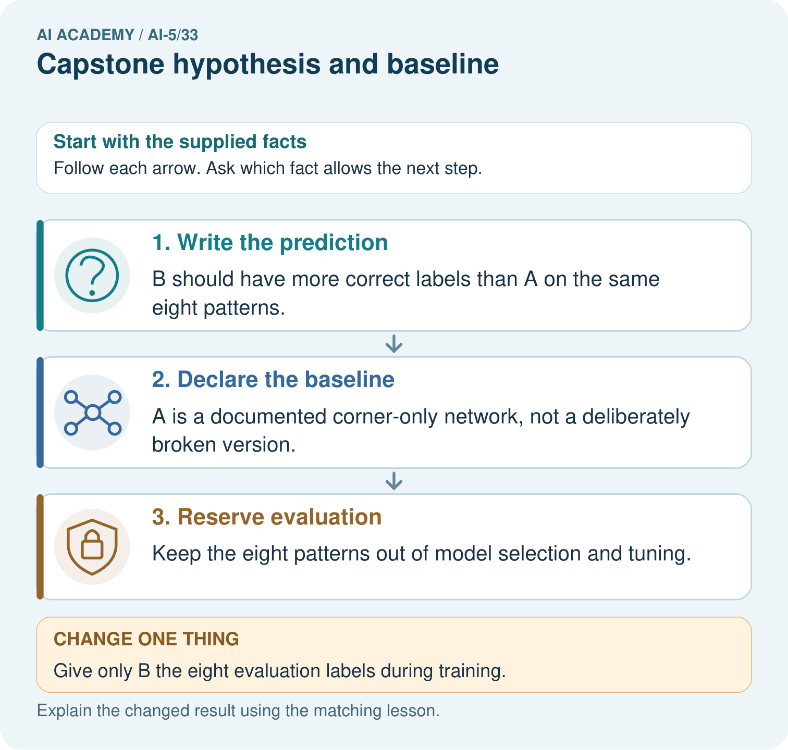
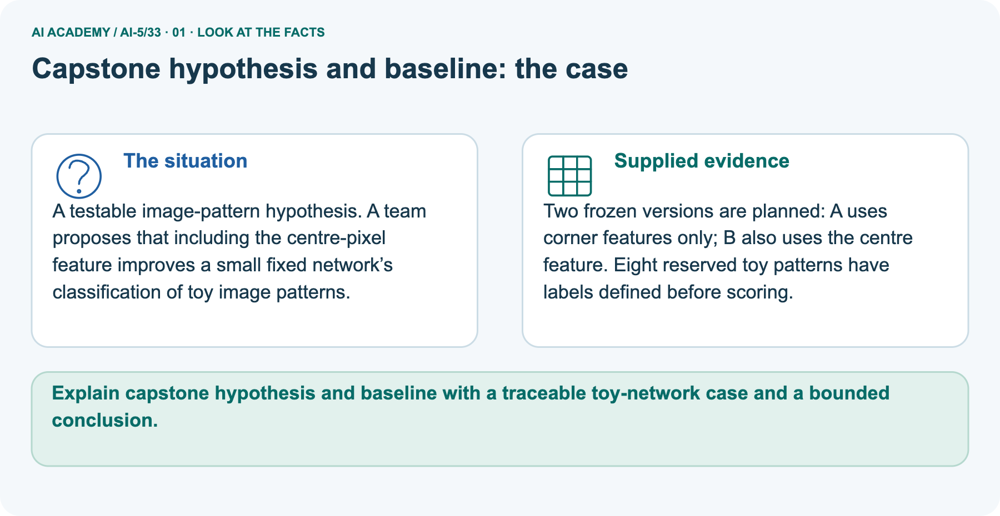
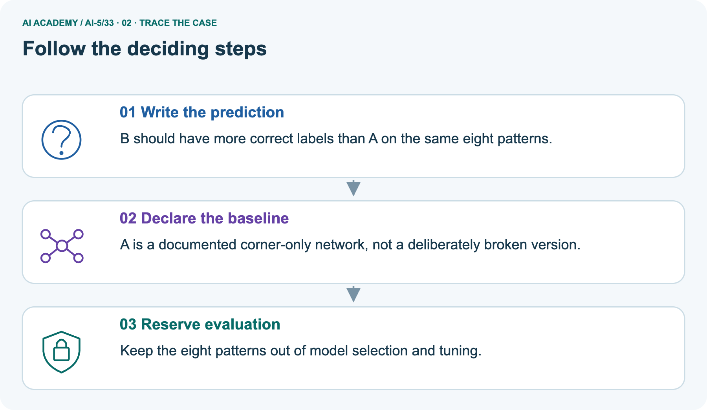
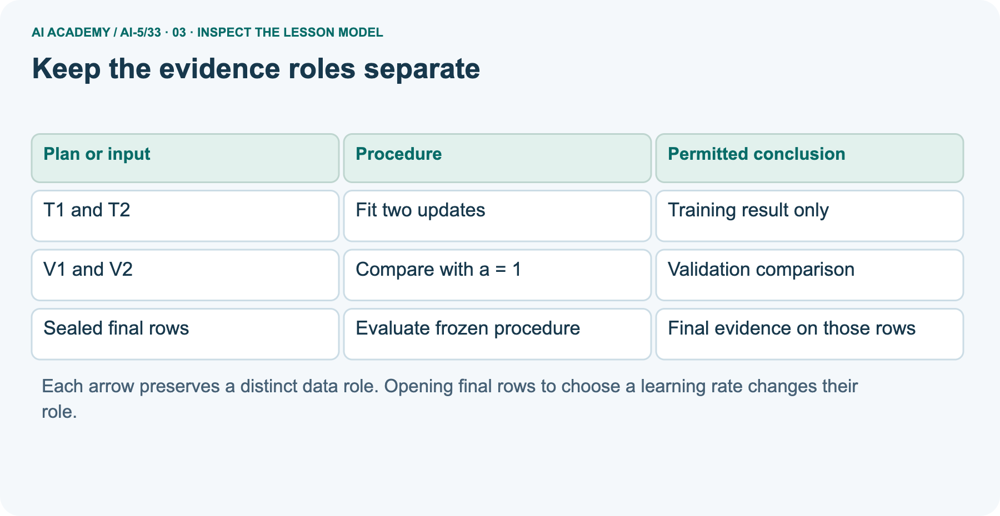
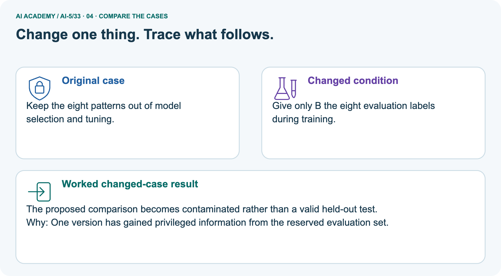
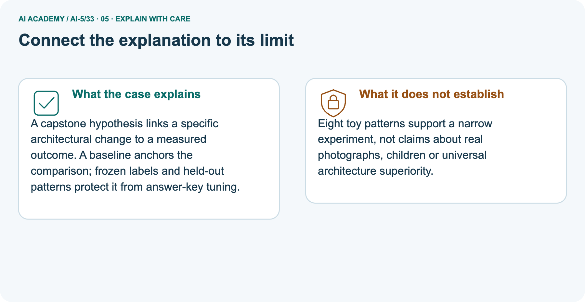
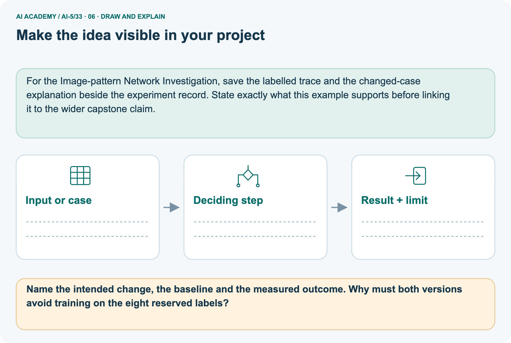

AI Academy · Level 5 · Grade 10 · Week 33 · Workbook
Capstone hypothesis and baseline
Learn to understand, design, build, test and explain AI systems responsibly.
Project: Image-pattern Network Investigation
THE CONNECTED WEEK
One readable capstone planning record.
Keep the hypothesis, fixed choices, baseline arithmetic, reserved roles and unrun status together.
Keep one habit: Recall → W1–W3/W5 → independent plan → project version → delayed return.
Main lesson · Section 1
Recall · Retrieve before notes
Keep this task’s inputs,rule and response together.
Complete task and evidence
Try the recall before opening notes. Then use a different colour or a labelled second line to correct your explanation.
Without opening the old lesson, explain one key idea from Documenting a network experiment. Give an example and a mistake that the idea helps you avoid.
Without opening the old lesson, explain one key idea from Dataset shift in neural models. Give an example and a mistake that the idea helps you avoid.
Without opening the old lesson, explain one key idea from Similarity and normalisation. Give an example and a mistake that the idea helps you avoid.
Use this reference for the original W1–W3 and W5 exercises. The separately named independent case supplies its own changed facts; use those facts for that attempt before feedback.
A capstone needs a question that evidence can answer. “Build a better network” leaves better undefined.
Here the question is: does two-update full-batch fitting of one scalar ReLU weight reduce validation mean squared error relative to the initial-weight baseline on a constructed positive-input task?
Predict max(0, a*x), with no bias. The baseline has a = 1. The trained candidate starts at a = 1, uses learning rate 0.1 and exactly two updates. These choices are written before results are inspected.
The hypothesis is that the trained candidate has lower validation MSE. The plan does not guarantee that result. This task tests training and record keeping, not whether neural networks are preferable to every other model.
A stronger comparison may also include an ordinary fitted line.
Documenting a network experiment
Dataset shift in neural models
Similarity and normalisation
Lesson reference for workbook practice
Main lesson · Section 5
W1 · Explain the current example
Keep this task’s inputs,rule and response together.
Complete task and evidence
Main plan CAP33: prediction ReLU(a*x), no bias; baseline a1; candidate starts a1, learning rate .1, exactly two full-batch MSE updates. Training T1 (1, 2), T2 (2, 4). Validation V1 (3, 6), V2 (4, 8). Baseline predictions 3/4, errors −3/−4, squared errors 9/16, MSE 12.5 on two rows. Strict validation criterion: candidate MSE <12.5 on those same rows; equality fails.
Candidate result not yet run; final result not measured. Final cases remain outside fitting, tuning and selection; record actual exposure and reserve fresh cases if already seen. Separate supported baseline predictions 2/4 versus targets 5/7 gives errors −3/−3 and MSE 9, but candidate predictions missing.
Separate picture proposes corner-only A versus centre-feature B on eight reserved patterns; it supplies no scored predictions or exact model/data fixture. It teaches a planning distinction, not a measured improvement. A revised learning-rate plan needs a preserved version and an honest account of what informed it.
State the prediction rule, baseline, candidate learning rate and update count, comparison data and metric. Write a testable hypothesis.
Main lesson · Section 6
W2 · Trace the calculation
Keep this task’s inputs,rule and response together.
Complete task and evidence
Main plan CAP33: prediction ReLU(a*x), no bias; baseline a1; candidate starts a1, learning rate .1, exactly two full-batch MSE updates. Training T1 (1, 2), T2 (2, 4). Validation V1 (3, 6), V2 (4, 8). Baseline predictions 3/4, errors −3/−4, squared errors 9/16, MSE 12.5 on two rows. Strict validation criterion: candidate MSE <12.5 on those same rows; equality fails.
Candidate result not yet run; final result not measured. Final cases remain outside fitting, tuning and selection; record actual exposure and reserve fresh cases if already seen. Separate supported baseline predictions 2/4 versus targets 5/7 gives errors −3/−3 and MSE 9, but candidate predictions missing.
Separate picture proposes corner-only A versus centre-feature B on eight reserved patterns; it supplies no scored predictions or exact model/data fixture. It teaches a planning distinction, not a measured improvement. A revised learning-rate plan needs a preserved version and an honest account of what informed it.
Compute baseline predictions, errors, squared errors and MSE on V1 and V2. State the denominator.
Main lesson · Section 7
W3 · Repair a misconception
Keep this task’s inputs,rule and response together.
Complete task and evidence
Main plan CAP33: prediction ReLU(a*x), no bias; baseline a1; candidate starts a1, learning rate .1, exactly two full-batch MSE updates. Training T1 (1, 2), T2 (2, 4). Validation V1 (3, 6), V2 (4, 8). Baseline predictions 3/4, errors −3/−4, squared errors 9/16, MSE 12.5 on two rows. Strict validation criterion: candidate MSE <12.5 on those same rows; equality fails.
Candidate result not yet run; final result not measured. Final cases remain outside fitting, tuning and selection; record actual exposure and reserve fresh cases if already seen. Separate supported baseline predictions 2/4 versus targets 5/7 gives errors −3/−3 and MSE 9, but candidate predictions missing.
Separate picture proposes corner-only A versus centre-feature B on eight reserved patterns; it supplies no scored predictions or exact model/data fixture. It teaches a planning distinction, not a measured improvement. A revised learning-rate plan needs a preserved version and an honest account of what informed it.
A proposal says “try models until the test score looks good”. Identify the missing fixed choices and explain why that test is not independent.
Main lesson · Section 9
W5 · Explain the limitation
Keep this task’s inputs,rule and response together.
Complete task and evidence
Main plan CAP33: prediction ReLU(a*x), no bias; baseline a1; candidate starts a1, learning rate .1, exactly two full-batch MSE updates. Training T1 (1, 2), T2 (2, 4). Validation V1 (3, 6), V2 (4, 8). Baseline predictions 3/4, errors −3/−4, squared errors 9/16, MSE 12.5 on two rows. Strict validation criterion: candidate MSE <12.5 on those same rows; equality fails.
Candidate result not yet run; final result not measured. Final cases remain outside fitting, tuning and selection; record actual exposure and reserve fresh cases if already seen. Separate supported baseline predictions 2/4 versus targets 5/7 gives errors −3/−3 and MSE 9, but candidate predictions missing.
Separate picture proposes corner-only A versus centre-feature B on eight reserved patterns; it supplies no scored predictions or exact model/data fixture. It teaches a planning distinction, not a measured improvement. A revised learning-rate plan needs a preserved version and an honest account of what informed it.
A partner inspects final labels and changes the learning rate. Explain how to document this and obtain independent evidence.
Main lesson · Section 4
Try alone · Selected transfer
Keep this task’s inputs,rule and response together.
Complete task and evidence
A new task predicts max(0, a*x), with baseline a = 1. Training rows are (1,3) and (2,6); validation rows are (3,9) and (4,12); final rows are sealed.
Specify a candidate starting at 1 with learning rate 0.1 and two full-batch updates. Calculate baseline validation MSE and write a strict improvement criterion. Has the candidate succeeded yet?
Attempt this case before feedback. Record any help. Earlier examples below are further practice; a case already practised with feedback cannot establish fresh transfer.
Independent case: Plan a new case independently
Main lesson · Section 10
Project · Keep the mathematical evidence
Keep this task’s inputs,rule and response together.
Complete task and evidence
For Image-pattern Network Investigation, use this week’s independent task as a rehearsal for the final evidence pack: A new task predicts max(0, a*x), with baseline a = 1.
Training rows are (1,3) and (2,6); validation rows are (3,9) and (4,12); final rows are sealed. Specify a candidate starting at 1 with learning rate 0.1 and two full-batch updates.
Calculate baseline validation MSE and write a strict improvement criterion. Has the candidate succeeded yet?
Keep actual observations separate from expected results, preserve failures, compare a baseline and explain the limits.
Main lesson · Section 11
Feedback · Repair and return
Keep this task’s inputs,rule and response together.
Complete task and evidence
Revisit this idea with your teacher after a delay. Familiarity is different from explaining and using it on a changed case.
| Evidence | My record |
|---|---|
| Worked alone / hint / model | |
| First step I repaired and why | |
| New case checked later; date and result | |
| What I can now explain without notes | |
| One remaining question |
Reference bank and extra practice
Choose the reference that helps your next step.
Reference · Supported W2 record
Reference · Section 2
Reference · Supported W2 record
Keep this task’s inputs,rule and response together.
Complete task and evidence
Use W2: Calculate the reference score for Capstone hypothesis and baseline. Record the answer once; the lesson and workbook refer to the same attempt.
| Given inputs | Procedure I chose | Middle steps | Result and check |
|---|---|---|---|
Extra practice · Individual reasoning check
Reference · Section 3
Extra practice · Individual reasoning check
Keep this task’s inputs,rule and response together.
Complete task and evidence
Use the worked case for Capstone hypothesis and baseline. Proposed explanation: “A hypothesis is a result”. Decide whether this explanation is supported.
Point to the step or supplied fact that decides; explain your repair if needed.
Reference · Earlier W4 response copy
Reference · Section 8
Reference · Earlier W4 response copy
Keep this task’s inputs,rule and response together.
Complete task and evidence
A new task predicts max(0, a*x), with baseline a = 1. Training rows are (1,3) and (2,6); validation rows are (3,9) and (4,12); final rows are sealed.
Specify a candidate starting at 1 with learning rate 0.1 and two full-batch updates. Calculate baseline validation MSE and write a strict improvement criterion. Has the candidate succeeded yet?
Extra practice · Pictured case
Reference · Section 12
Extra practice · Pictured case
Keep this task’s inputs,rule and response together.
Complete task and evidence
A testable image-pattern hypothesis. A team proposes that including the centre-pixel feature improves a small fixed network’s classification of toy image patterns.
Two frozen versions are planned: A uses corner features only; B also uses the centre feature. Eight reserved toy patterns have labels defined before scoring.
Name the intended change, the baseline and the measured outcome. Why must both versions avoid training on the eight reserved labels?
Support used: alone / hint / worked example. This record is practice evidence.
Project connection: For the Image-pattern Network Investigation, save the labelled trace and the changed-case explanation beside the experiment record.
State exactly what this example supports before linking it to the wider capstone claim.



Reference · Project milestone
Reference · Section 13
Reference · Project milestone
Keep this task’s inputs,rule and response together.
Complete task and evidence
Project: Image-pattern Network Investigation
Current milestone: Present and defend. Demonstrate the system, explain one failure and justify the next improvement with evidence.
For the Image-pattern Network Investigation, save the labelled trace and the changed-case explanation beside the experiment record. State exactly what this example supports before linking it to the wider capstone claim.
| Evidence to keep | My record |
|---|---|
| This week’s input and deciding step | |
| Prediction and actual result (or labelled paper trace) | |
| One change since the previous checkpoint and why | |
| One error or limit and the next test |
Extra practice · Predict,check and repair
Reference · Section 14
Extra practice · Predict,check and repair
Keep supported feedback separate from the independent case.
First supported question and optional hint
A testable image-pattern hypothesis. A team proposes that including the centre-pixel feature improves a small fixed network’s classification of toy image patterns.
Which labelled step matches this detail? Keep the eight patterns out of model selection and tuning.
1. Reserve evaluation
2. Declare the baseline
3. Write the prediction
Hint if needed: Read the steps in the pictorial case. Match the supplied detail to the stage that performs or records it.
Practice 1: explain the deciding evidence
Check after the first attempt
After your attempt, compare with the supported explanation: Reserve evaluation Keep the eight patterns out of model selection and tuning. A capstone hypothesis links a specific architectural change to a measured outcome.
A baseline anchors the comparison; frozen labels and held-out patterns protect it from answer-key tuning.
Changed-case question and optional hint
Changed-case practice: Give only B the eight evaluation labels during training. Which conclusion is supported by the supplied facts?
1. We can decide the result without examining the changed input or the procedure.
2. This one example guarantees correct results for every future input.
3. The proposed comparison becomes contaminated rather than a valid held-out test.
Hint if needed: Use the changed condition and the deciding step in the pictorial trace. The answer must say what follows from those facts.
Practice 2: explain the deciding evidence
Check after the changed attempt
After your attempt, compare with the supported explanation: The proposed comparison becomes contaminated rather than a valid held-out test. One version has gained privileged information from the reserved evaluation set.
Repair and retain the record
Review Documenting a network experiment (ai-5/32). Goal: Record a network experiment with enough detail to replay its calculations. Short practice: What additional evidence is needed for a final performance claim?
Point to the relevant step in the picture, then write the changed result and the rule or evidence that supports it.. Return to this week and explain what you changed.
Review Dataset shift in neural models (ai-5/30). Goal: Explain how a changed input mix can change overall accuracy. Short practice: Did the supplied model’s dim-light accuracy deteriorate?
Point to the relevant step in the picture, then write the changed result and the rule or evidence that supports it.. Return to this week and explain what you changed.
Review Similarity and normalisation (ai-5/27). Goal: Calculate vector length and normalise a nonzero vector. Short practice: Why do the original two metrics select different winners?
Point to the relevant step in the picture, then write the changed result and the rule or evidence that supports it.. Return to this week and explain what you changed.
Use Download completed work in the hosted lesson to export your answers, reflections, practice feedback and code-run evidence. Open the HTML copy to read or print it.
Drafts stay in this browser when storage is available; clear drafts on a shared device.
Earlier wording, alternatives and picture transcripts
Use this supported practice once, in the browser or on paper. Keep the reserved independent assessment for a separate first attempt before teacher feedback.
Repair a missing building block
Keep your completed work
Reference · Six-picture response sheets
Reference · Section 15
Reference · Six-picture response sheets
Choose the picture that helps explain the current step.
01. Capstone hypothesis and baseline: the case



A testable image-pattern hypothesis. A team proposes that including the centre-pixel feature improves a small fixed network’s classification of toy image patterns.
Supplied facts: Two frozen versions are planned: A uses corner features only; B also uses the centre feature. Eight reserved toy patterns have labels defined before scoring.
Point to the given fact that matters most. Explain why it matters.
02. Follow the deciding steps



Write the prediction: B should have more correct labels than A on the same eight patterns. → Declare the baseline: A is a documented corner-only network, not a deliberately broken version. → Reserve evaluation: Keep the eight patterns out of model selection and tuning.
Point to each numbered stage and explain which recorded input it uses.
03. Keep the evidence roles separate



Keep the evidence roles separate. T1 and T2 | Fit two updates | Training result only. V1 and V2 | Compare with a = 1 | Validation comparison. Sealed final rows | Evaluate frozen procedure | Final evidence on those rows
Read the labels and values. Explain the relationship the model shows.
04. Change one thing. Trace what follows.



Original case: Keep the eight patterns out of model selection and tuning. Changed condition: Give only B the eight evaluation labels during training.
Expected result: The proposed comparison becomes contaminated rather than a valid held-out test. Reason: One version has gained privileged information from the reserved evaluation set.
Predict before checking the worked changed-case result. Name what changed and what the supplied facts allow you to conclude.
05. Connect the explanation to its limit



A capstone hypothesis links a specific architectural change to a measured outcome. A baseline anchors the comparison; frozen labels and held-out patterns protect it from answer-key tuning.
Limit: Eight toy patterns support a narrow experiment, not claims about real photographs, children or universal architecture superiority.
Explain the case, then point to a limit on the claim.
06. Make the idea visible in your project



For the Image-pattern Network Investigation, save the labelled trace and the changed-case explanation beside the experiment record. State exactly what this example supports before linking it to the wider capstone claim.
Draw your input, deciding step, result and limit. Supported question: Name the intended change, the baseline and the measured outcome. Why must both versions avoid training on the eight reserved labels?
Draw your project trace and justify the deciding step using evidence.